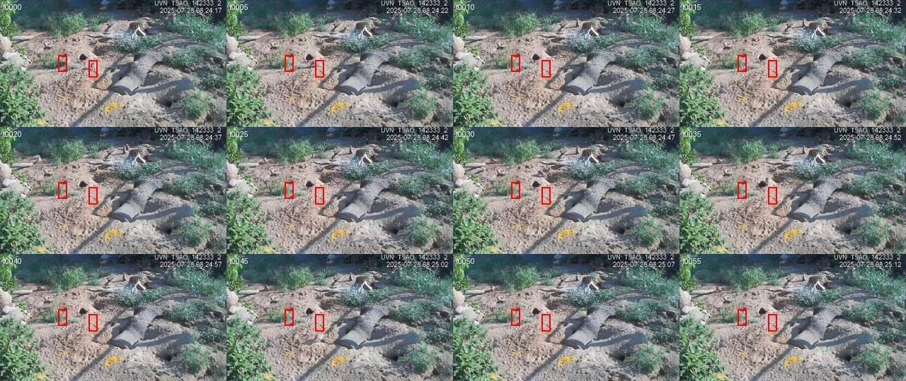
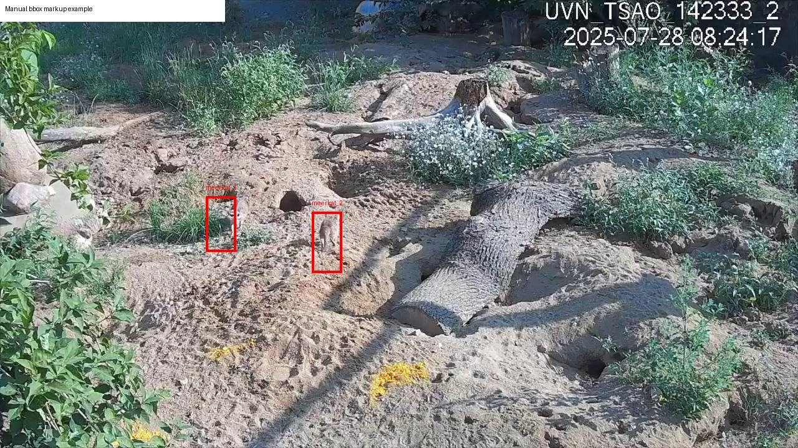
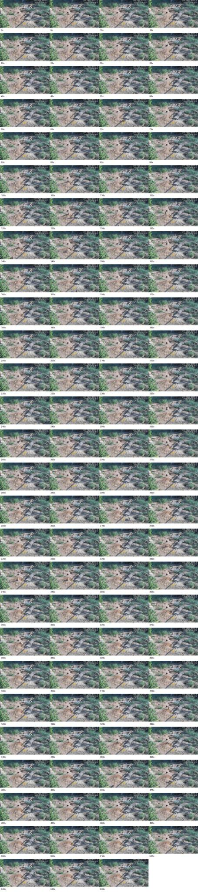
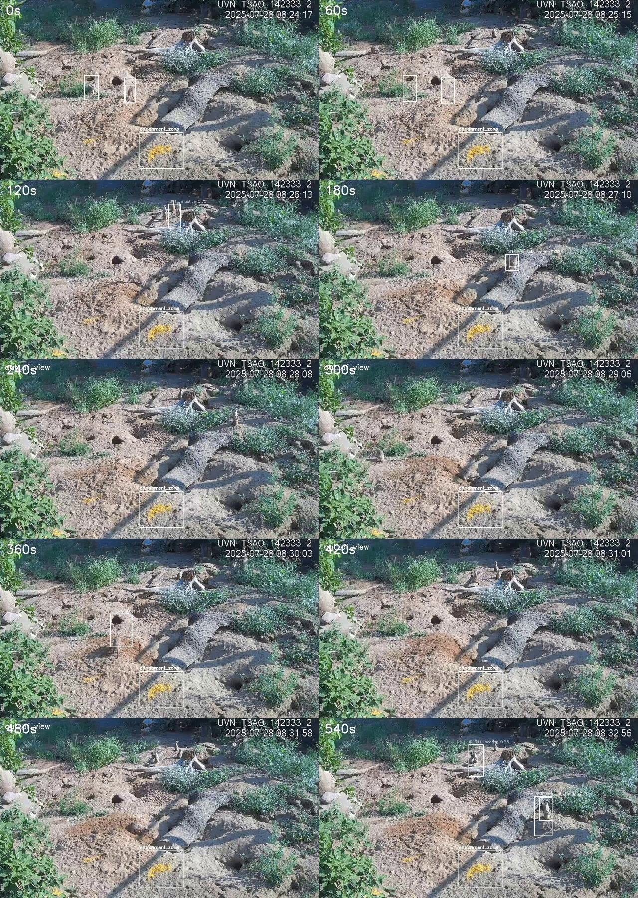
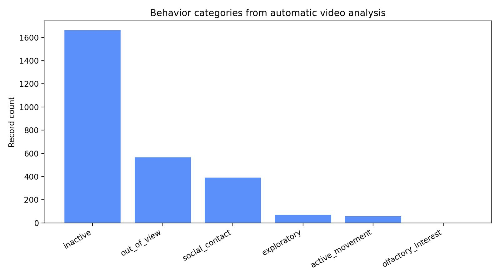
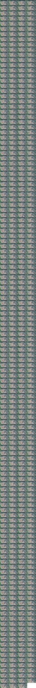
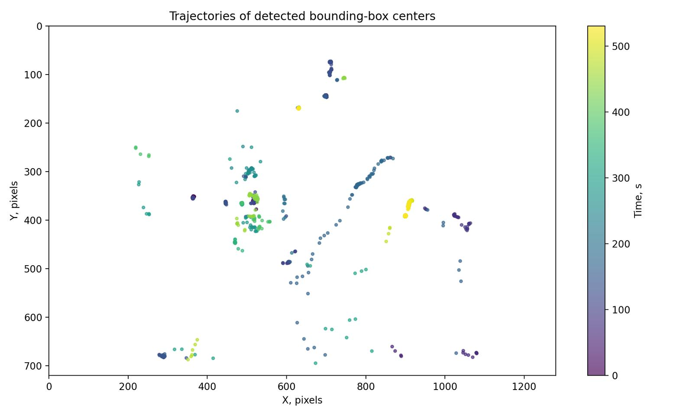
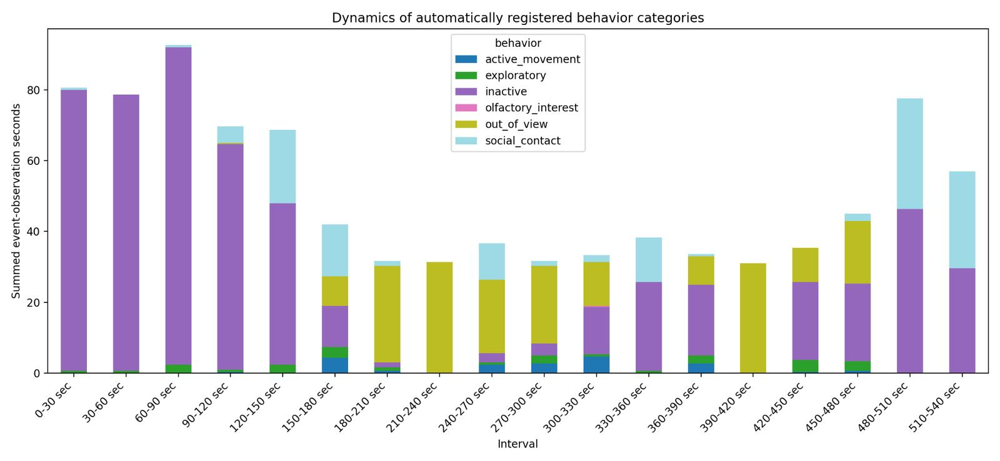
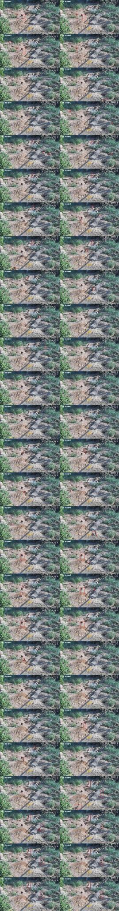
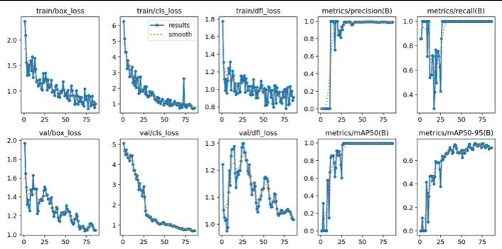

Кратко о проекте
Система выделяет сурикат на видеокадрах, сохраняет координаты рамок, оценивает положение животных и формирует таблицы для анализа поведения. Текущая версия является прототипом: разметка подготовлена автоматически и требует ручной проверки перед строгими научными выводами.
531
кадр извлечен из видео
603
pseudo-размеченные рамки
35
эпох обучения YOLOv8n
2745
записей-событий анализа
Основные результаты
| Показатель | Значение |
|---|---|
| Видео | IMG_1561.MP4 |
| Длительность | 530,845 с |
| Разрешение | 1280×720 |
| Класс модели | meerkat |
| Precision | 0,747 |
| Recall | 0,589 |
| mAP50 | 0,674 |
| mAP50-95 | 0,509 |
Графики и изображения










Документация проекта
- Алгоритм анализа
- Материалы и методы
- Результаты и обсуждение
- Графическое отображение результатов
- Код и воспроизводимость